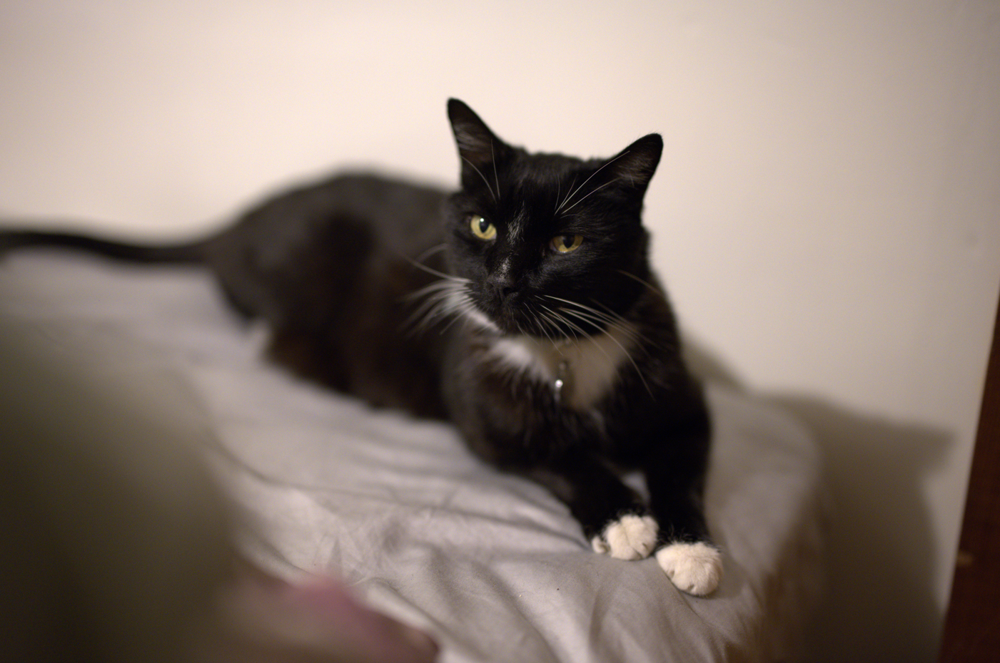

Bio
Hello, I'm Hudson Simpson! I'm a passionate student web developer with a love for photography and design, I got into ASU to create innovative human first web design. And I hope to make people happy to see and interact with my work. A little bit about me I've been working at Starbucks for about three years, ASU for over two years now and I completed a capstone photography class. Earning a certificate of achievement in Studio Lighting And Techniques.
Picture of my cat
